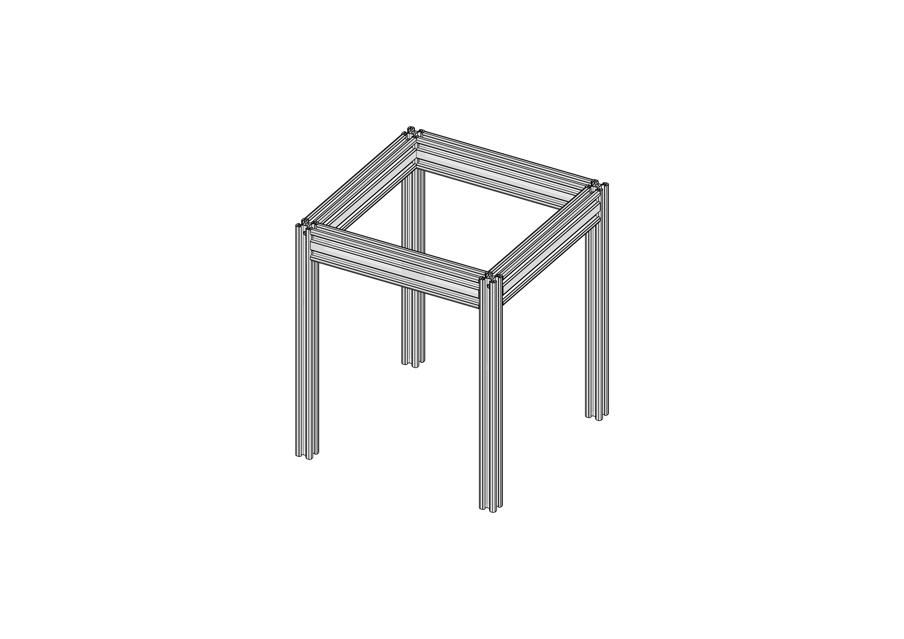
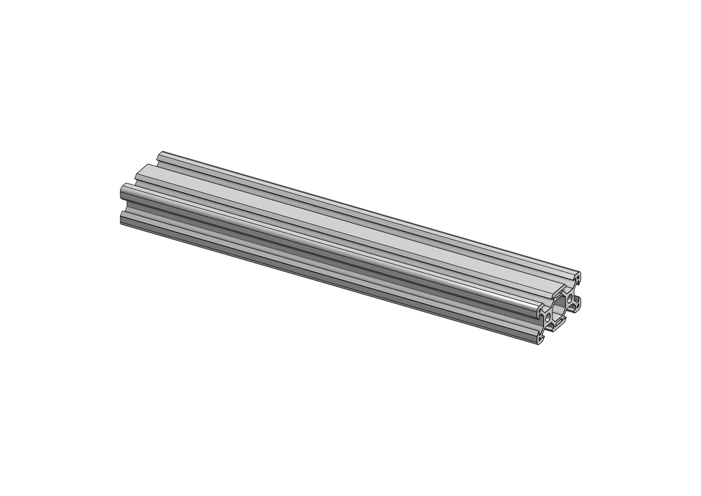
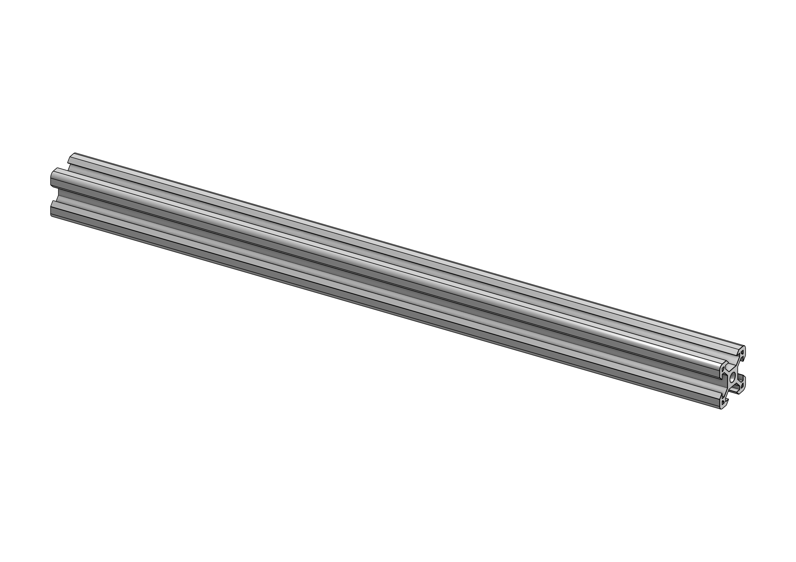
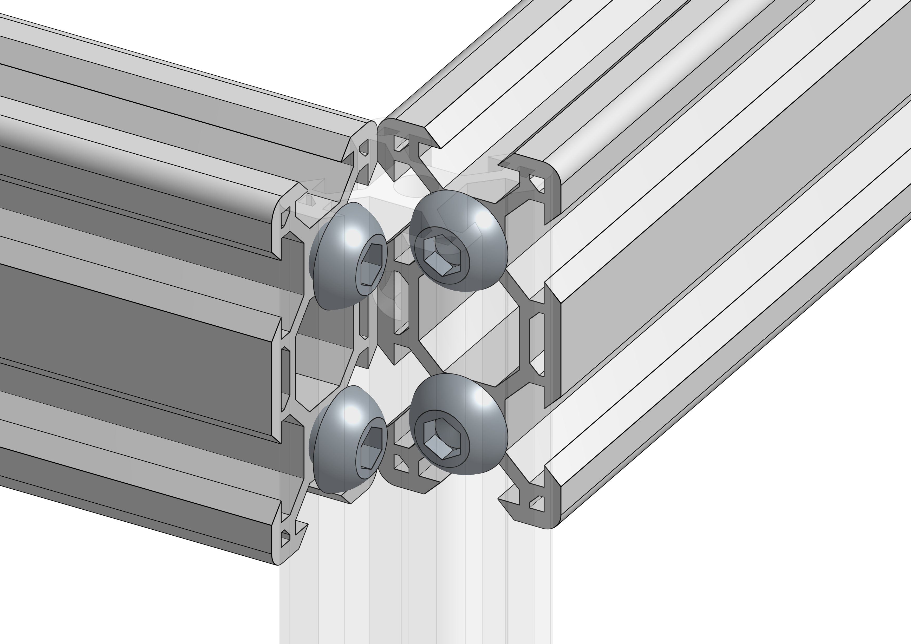

Frame build instructions

This is the basis of the printer.
Required parts
| Amount | Item | |
|---|---|---|
| 4 | 2040 220mm |  |
| 4 | 2020 300mm |  |
| 16 | M6x16mm SBHS |  |
Step 1: Drill blind holes
Using the Blind Hole Drill Jig, we will drill one side of all four 2020 extrusions, both in front and on the sides.
Step 2: Tap extrusions
In order to be able to insert the socket head screws into the sides of the 2040 extrusions, the sides needs to be tapped with an M6 tap.
Step 3: Bolt it together
First, insert the M6 bolts into the 2040 holes you just tapped, then slide the bolt heads into the vertical 2020 extrusion and tighten them down. Make sure you keep the frame squared before tightening the bolts.
